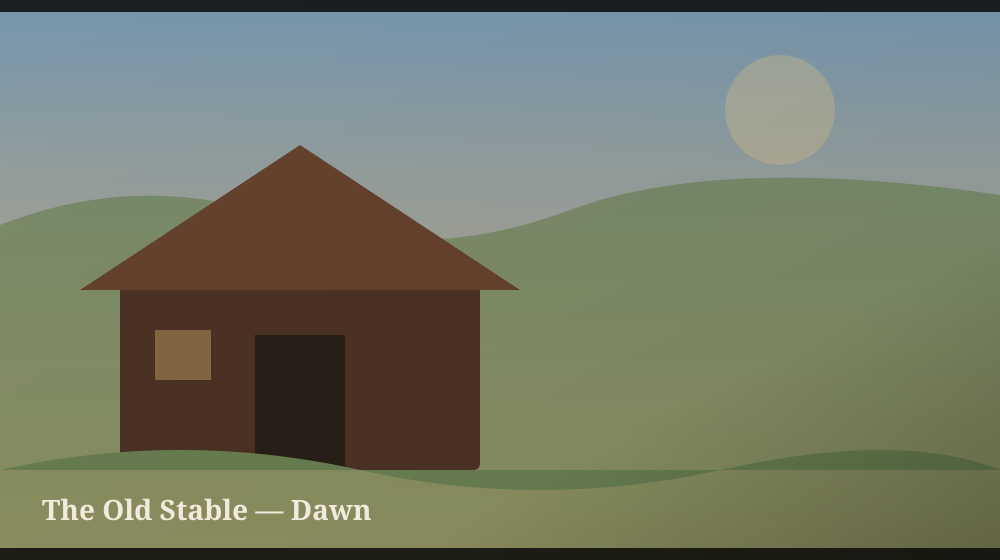
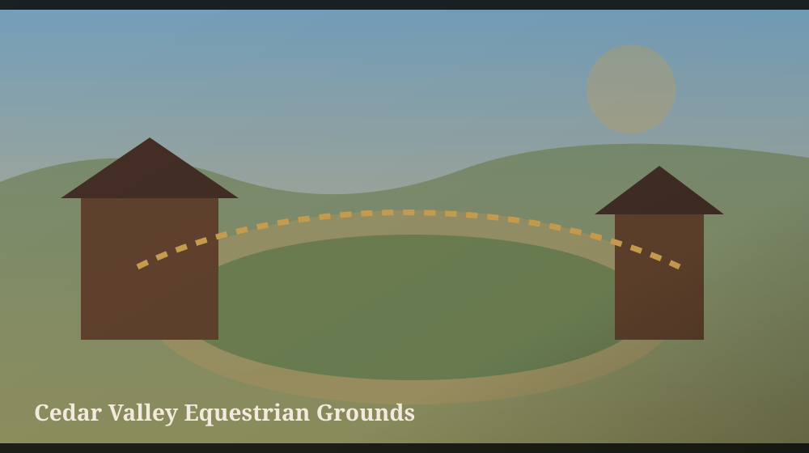
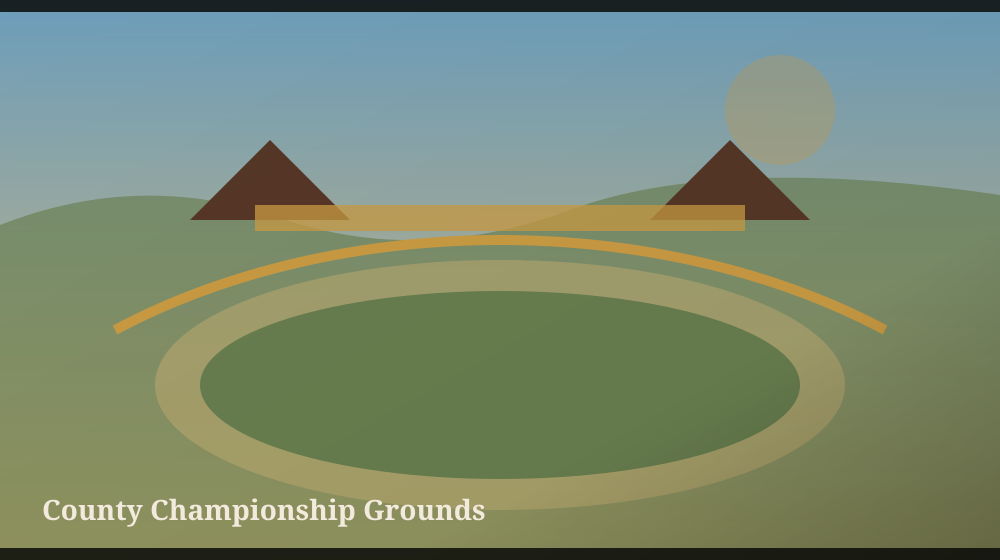
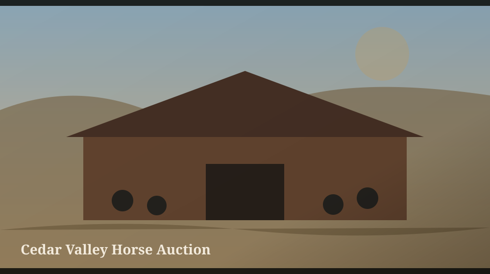
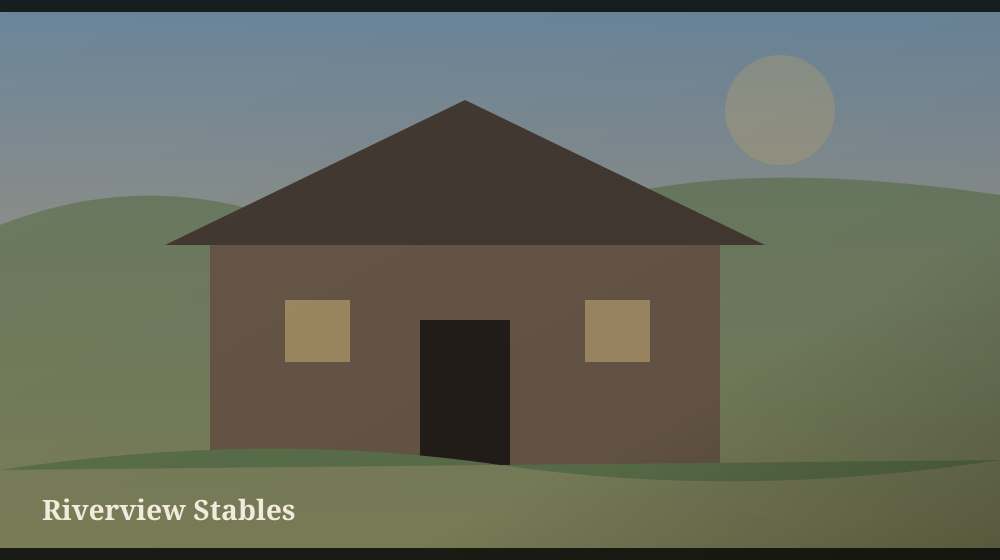
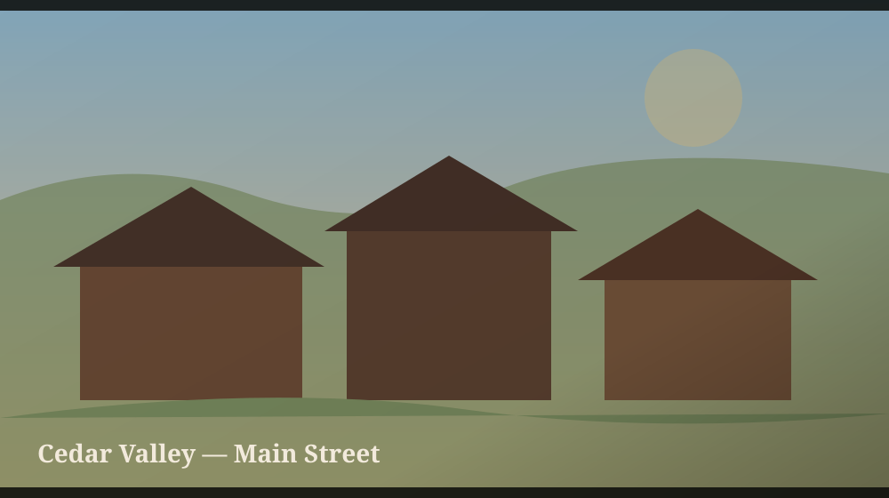

Build the stable. Raise the bloodline. Grow the empire. Stable Empire V2 is a deep browser-based horse management game centered on long-term progression.
Stable Empire is built around the idea that growth should take time. Horses develop, facilities expand, bloodlines improve, contracts create pressure, and the estate becomes more capable as the player invests in it.
The current release combines management systems with a story campaign and a frontier county setting rather than treating the game as a simple clicker.
CURRENT RELEASE
Stable Empire V2
Deep stable and estate progression
Horse training and specialization
Breeding, genetics, potential, pedigree, fitness, and stress
County competitions, contracts, and practice
Crafting, workshop tiers, supplies, and construction components
Story campaign with recurring characters
Frontier county map, weather, and day progression
Customer inquiries, rival stables, and auction systems
CORE SYSTEMS
Built for long-term management
The game layers several progression loops together so the stable, horses, workshop, and county activity all matter.
🐎
Train & specialize
Develop horses over time and prepare them for different careers and competition paths.
Upgrade barns, paddocks, training areas, veterinary facilities, staff spaces, and more.
🛠️
Craft components
Workshop tiers, raw materials, recipes, crafting XP, and advanced components support late-game expansion.
🏆
Compete & contract
Practice, competitions, advertising, customer work, and county opportunities drive income and reputation.
📖
Follow the story
The Cedar Valley Legacy campaign adds recurring characters, cinematics, relationships, and rivalries.
IN-GAME ARTWORK
Across Cedar Valley
Selected scene artwork used by the current Stable Empire story and cinematic system.

The Old Stable — Dawn

County event grounds

County Championship Grounds

Auction yard

Riverview Stables

Cedar Valley main street
Starfall Arcade showcases Stable Empire here without changing the Stable Empire game itself. The live game remains its own separate project and save system.
PLAY NOW
Your stable is waiting.
Stable Empire runs directly in the browser. Continue your existing save or start a new stable from the live game page.